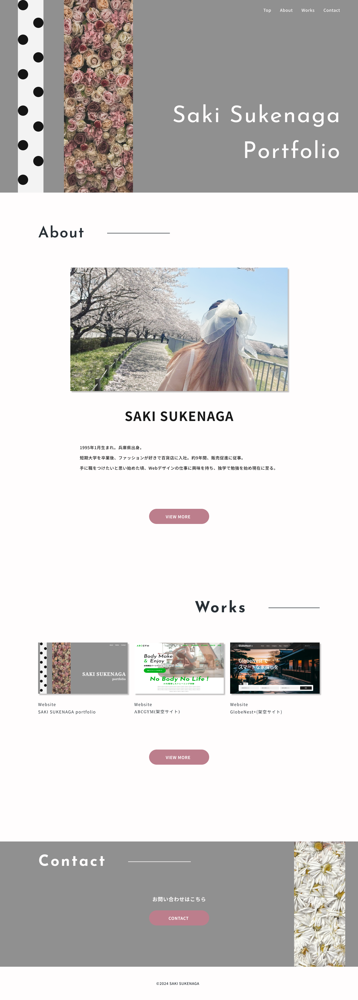
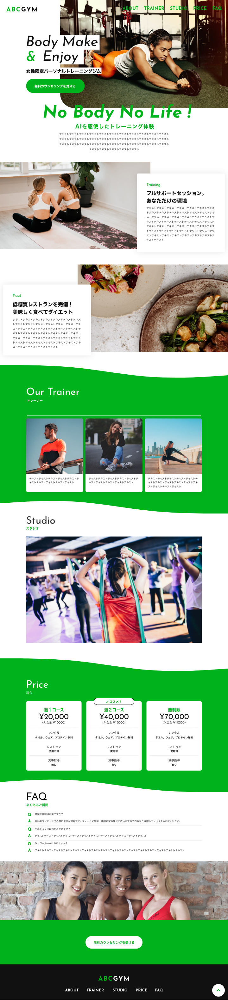
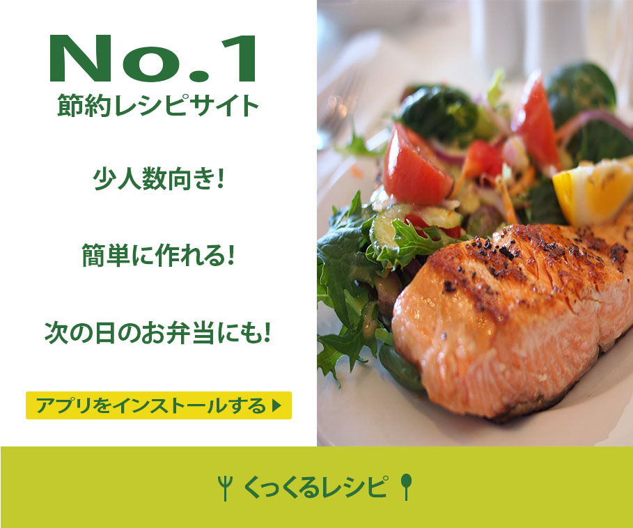

-

Website
SAKI SUKENAGA portfolio(このサイト)
tool:Figma/HTML/CSS/jQuery
created:2024/9
デザインからコーディングまで担当しました。
自分の作品を飾った部屋に招待したいというコンセプトを元に作成しました。fvは実際の自室をイメージし、作品が壁に飾られているように見えるよう工夫をしました。
スライダーはslickを使用し、コンタクトフォームは、Googleフォームを使用しました。 -

Website
ABCGYM(架空サイト)
tool:HTML/CSS/jQuery
created:2024/5
課題のデザインカンプからコーディングを担当しました。(コーディング条件あり)
レスポンシブ対応、fvはjQeryでフェードで画像が変化していくようにし、スクロールに合わせて各画像が画面内に入ったら、下からフェードインするように、スマホ画面時のprice部分はslickを使って、スライダー対応にしました。 -

Website
GlobeNets+(架空サイト)
tool:HTML/CSS/jQuery
created:2024/8
課題のデザインカンプからコーディングを担当しました。(コーディング条件あり)
レスポンシブ対応、デザインカンプと一致するようにパーフェクトピクセルで作成、タブの切り替えとテキスト入力ができる、ハンバーガーメニューは滑らかに右からフェードインするなどしました。 -

Website
RAFT(架空サイト)
tool:HTML/CSS/jQuery
created:2024/5
課題のデザインカンプからコーディングを担当しました。(コーディング条件あり)
レスポンシブ対応、デザインカンプと一致するようにパーフェクトピクセルで作成、hoverやinstagramセクションの部分は滑らかにスライドさせるなど、動きのあるサイトにしました。 -

banner
くっくるレシピ(架空バナー)
tool: Photoshop
created:2024/10
架空レシピアプリのバナーのデザインを担当しました。
レシピアプリの中で一番使われている、その理由(ポイント)、アプリをインストールしてもらう、という条件を設定し作成しました。料理と文字を強調させたいと思い、色はグリーン系で統一し、ボタンは目立つようにイエローにしました。デザインは料理の画像とNo.1の文字を目立たせたかったので、シンプルにしました。
{kind=link}